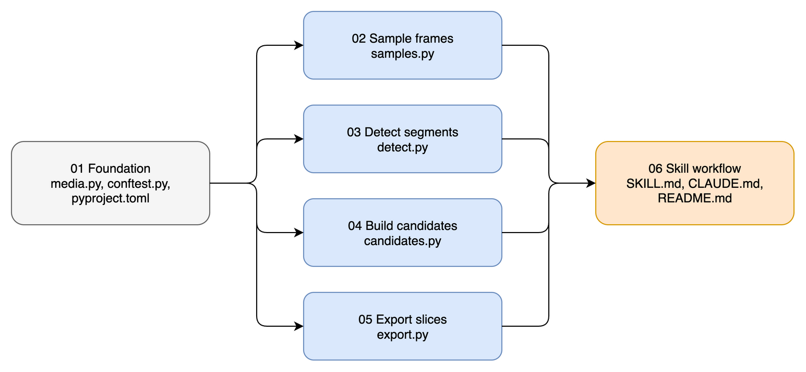
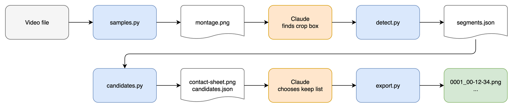

Earlier charts: design brainstorm.
After task 01, tasks 02 to 05 can run in parallel. Each owns its own script and test file.

Scripts share only files on disk. A task can test with a hand-written input file and does not wait for the previous script.

samples.py <video> --workdir <dir> [--count 12]
detect.py <video> --workdir <dir> --crop W:H:X:Y [--noise-db -50] [--min-seconds 2]
candidates.py <video> --workdir <dir> --crop W:H:X:Y
export.py --workdir <dir> --output <dir> --keep 1,3,7
segments.json [{"start": 5.0, "end": 9.96}]
candidates.json [{"number": 1, "start": 5.0, "frame_time": 9.46,
"file": "candidates/0001.png", "row": 0, "column": 0}]
| Task | Outcome | Main files | Depends on |
|---|---|---|---|
| 01 Foundation | ffmpeg and ffprobe wrappers with timeouts and typed errors, test setup, synthetic test video | scripts/media.py, tests/conftest.py, tests/test_media.py, pyproject.toml | None |
| 02 Sample frames | Evenly spaced samples and a montage | scripts/samples.py, tests/test_samples.py | 01 |
| 03 Detect segments | segments.json from crop + freezedetect | scripts/detect.py, tests/test_detect.py | 01 |
| 04 Build candidates | Cropped candidate frames, contact sheet, grid map | scripts/candidates.py, tests/test_candidates.py | 01 |
| 05 Export slices | Named PNGs for the kept candidates | scripts/export.py, tests/test_export.py | 01 |
| 06 Skill workflow | SKILL.md and an end-to-end run on the real recording | SKILL.md, CLAUDE.md, README.md | 02, 03, 04, 05 |
scripts/ is .claude/skills/video-slicer/scripts/.